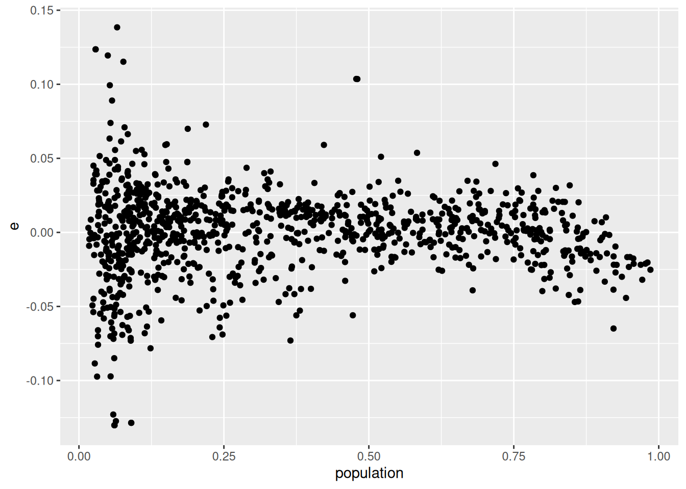

df <- read.csv("petrol2.csv")
cor(df$pricechange, df$competition)[1] -0.2836159
The year 2022 has seen enormous fluctuations in energy prices. The price of gasoline (petrol) is one of these that has changed price a lot over the last year.
To reduce the financial burden on households, the German government reduced the excise duty on unleaded petrol by 29.55 cents starting on June 1, 2022.
This excise duty reduction had a large impact on the price of petrol. When the excise duty fell, petrol stations were not forced to reduce the price of petrol by the full amount. You have been tasked by the government to study why some stations reduced their prices more than others.
You are given a data set which contains data from a random sample of 1,000 petrol stations within 100km of the Dutch border. The locations of these stations are shown in the map below:
The variable names and their descriptions are shown in the table below:
pricemay: The price (in euros) of E10 petrol on 1 May 2022pricejuly: The price (in euros) of E10 petrol on 1 July 2022pricechange : The change in price between 1 May and 1 July 2022 (in euros). Negative values mean price decreases.population: Number of inhabitants living within 10km of the petrol station (in millions of people)competition: Number of other petrol stations within 10km per million inhabitantsborder: Dummy variable for being within 3km of the Dutch borderhighway: Dummy variable for being on a highway/Autobahnaral: Dummy variable for the station’s brand being Aralshell: Dummy variable for the station’s brand being Shellesso: Dummy variable for the station’s brand being Essototalenergies: Dummy variable for the station’s brand being TotalEnergiesYou can download the dataset by clicking on the following link: petrol2.csv
Report the sample correlation coefficient between pricechange and competition.
Answer:
df <- read.csv("petrol2.csv")
cor(df$pricechange, df$competition)[1] -0.2836159Choose the answer below which best represents the interpretation of the sample correlation coefficient between pricechange and competition:
Answer: There is a weak negative linear relationship between the price change and competition.
Choose an answer from the options below that best describes what you can learn from both (a) the sample correlation coefficient between pricechange and population and (b) a scatter plot of population (on the x-axis) and pricechange (on the y-axis).
Answer: More populated areas saw a smaller decrease in prices after the excise duty reduction compared to less populated areas.
Explanation:
cor(df$pricechange, df$population)[1] 0.2773691library(ggplot2)
ggplot(df, aes(population, pricechange)) + geom_point()
Estimate a simple linear regression model explaining the change in price of petrol by population.
m1 <- lm(pricechange ~ population, data = df)
summary(m1)
Call:
lm(formula = pricechange ~ population, data = df)
Residuals:
Min 1Q Median 3Q Max
-0.130208 -0.014065 0.001756 0.015786 0.138446
Coefficients:
Estimate Std. Error t value Pr(>|t|)
(Intercept) -0.161975 0.001498 -108.13 <2e-16 ***
population 0.030556 0.003350 9.12 <2e-16 ***
---
Signif. codes: 0 '***' 0.001 '**' 0.01 '*' 0.05 '.' 0.1 ' ' 1
Residual standard error: 0.02918 on 998 degrees of freedom
Multiple R-squared: 0.07693, Adjusted R-squared: 0.07601
F-statistic: 83.18 on 1 and 998 DF, p-value: < 2.2e-16Report the sample regression slope.
Answer:
coef(m1)[2]population
0.03055628 Based on the simple linear regression model, what was the average price decrease (in cents) in areas of zero population?
Answer:
- coef(m1)[1] * 100(Intercept)
16.19751 Explanation: The estimated intercept b_0 gives an estimate of \mathbb{E}[Y_i|x_i=0], the expected change in price when population is zero. However, Y_i is measured in euros so we multiply by 100 to convert to cents. Additionally, because b_0<0 we multiply by -1 to get the size of the decrease (as a positive number).
Create appropriate plots to be able to comment on any violations of the homoskedasticity and independence assumptions in your model. For each of these 2 model assumptions, state (i) the model assumption, (ii) the plot (if any) you created to test the assumption and (iii) your arguments for or against why the assumption is violated in this model.
Note: As of Fall 2024 we only visually check for heteroskedasticity and (in the case of time series data) serial autocorrelation. Therefore this question was re-written slightly from its original form to reflect this change.
Answer: This is cross-sectional data (many petrol stations at the same point in time) so we only check for heteroskedasticity. Independence across observations is given by random sampling as stated in the introduction. To check for heteroskedasticity, we plot the residuals against the independent variable:
df$e <- m1$residuals
ggplot(df, aes(population, e)) + geom_point()
Because the dispersion of the residuals is higher at low values of population, this assumption is violated. There is some evidence for heteroskedasticty.
Estimate a multiple linear regression model explaining the price change by:
competitionborderpopulationhighwayIf you estimated the model correctly, your estimated regression intercept should be -0.147803.
m2 <- lm(pricechange ~ population + highway + competition + border, data = df)
summary(m2)
Call:
lm(formula = pricechange ~ population + highway + competition +
border, data = df)
Residuals:
Min 1Q Median 3Q Max
-0.121147 -0.014327 0.002749 0.016018 0.121309
Coefficients:
Estimate Std. Error t value Pr(>|t|)
(Intercept) -0.14780325 0.00341575 -43.271 < 2e-16 ***
population 0.02270240 0.00375709 6.043 0.00000000214 ***
highway 0.00983050 0.00515244 1.908 0.0567 .
competition -0.00011101 0.00002182 -5.087 0.00000043447 ***
border 0.02326379 0.00580928 4.005 0.00006674617 ***
---
Signif. codes: 0 '***' 0.001 '**' 0.01 '*' 0.05 '.' 0.1 ' ' 1
Residual standard error: 0.02844 on 995 degrees of freedom
Multiple R-squared: 0.1255, Adjusted R-squared: 0.122
F-statistic: 35.71 on 4 and 995 DF, p-value: < 2.2e-16Report the coefficient of determination.
Answer:
summary(m2)$r.squared[1] 0.1255493What proportion of the variation in the price change data is left unexplained by the model? Note: write your answer as a proportion (between 0 and 1).
Answer:
1 - summary(m2)$r.squared[1] 0.8744507Explanation: The R^2 measures the proportion of the price change data explained by the model. 1-R^2 measures the proprtion of the price change data left unexplained.
Perform an appropriate hypothesis test to test the usefulness of the model. Use a 5% significance level.
Answer:
summary(m2)$fstatistic[1] value
35.7143 qf(0.95, 4, 995)[1] 2.380876Report a 90% confidence interval for the estimated coefficient on highway.
Answer:
confint(m2, parm = "highway", level = 0.9) 5 % 95 %
highway 0.001347595 0.0183134Test the following claim with a 5% significance level:
“Stations on the highway on average had a smaller decrease in prices compared to stations not on the highway.”
What is the null hypothesis? \beta_4 </\leq/>/\geq/=/\neq \underline{\hspace{20mm}} (choose one comparison operator and fill in a value in the blank).
What is the alternative hypothesis? \beta_4 </\leq/>/\geq/=/\neq \underline{\hspace{20mm}} (choose one comparison operator and fill in a value in the blank).
The test statistic \frac{B_4-b}{S_{B_4}}, where b is the hinge, follows a(n) t/F/partial F/normal/chi squared (choose one) distribution with \underline{\hspace{20mm}} degrees of freedom under H0/under H1/always (choose one).
What is the value of the test statistic? \underline{\hspace{20mm}}
What is the associated p-value? \underline{\hspace{20mm}}
What is your conclusion? Choose an option below:
Answer:
The model is: \mathbb{E}[price_{it}-price_{it-1}|x_{i1},x_{i2},x_{i3},x_{i4}]= \beta_0 + \beta_1 x_{i1} + \beta_2 x_{i2} + \beta_3 x_{i3} + \beta_4 x_{i4} where price_{it} is the price of petrol in station i in July and price_{it-1} is the price of petrol in station i in May. On the highway, the model is: \mathbb{E}[price_{it}-price_{it-1}|x_{i1},x_{i2},x_{i3},x_{i4}=1]= \beta_0 + \beta_1 x_{i1} + \beta_2 x_{i2} + \beta_3 x_{i3} + \beta_4 Off the highway, the model is: \mathbb{E}[price_{it}-price_{it-1}|x_{i1},x_{i2},x_{i3},x_{i4}=0]= \beta_0 + \beta_1 x_{i1} + \beta_2 x_{i2} \beta_3 x_{i3} Taking differences: \mathbb{E}[price_{it}-price_{it-1}|x_{i1},x_{i2},x_{i3},x_{i4}=1]- \mathbb{E}[price_{it}-price_{it-1}|x_{i1},x_{i2},x_{i3},x_{i4}=0]=\beta_4 A \beta_4>0 here indicates that holding population, competition and distance to the border fixed, the price change was on average higher on the highway compared to off the highway. We saw above that prices decreased across the board, i.e. price_{it}-price_{it-1}<0 for all i. So \beta_4>0 means that holding population, competition and distance to the border fixed, the price decrease was on average smaller on the highway compared to off the highway (because the change is higher). So the claim means that \beta_4>0. This will be our alternative hypothesis.
We are ready to answer the question:
m2$df.residual[1] 995t value in the summary output because the hinge b=0. We can also get it directly with:t <- coef(summary(m2))["highway", "t value"]
t[1] 1.9079321 - pt(t, 995)[1] 0.02834384The 90% confidence interval for border is [0.014, 0.033]. Based on this, stations at the border:
Answer: Had a significantly smaller price decrease compared to stations inland.
Explanation: A \beta_2>0 means that on average price changes are higher on the border compared to away from the border (holding population, competition and position relative to the highway fixed). But since prices decreased, this also means that border stations had a smaller price decrease. Because our confidence interval does not contain zero, this estimated effect is significantly different from zero.
A single station at the Dutch border was charging exactly €2.00 per liter of E10 petrol on May 1. The station is not on the highway but in a small town with exactly 10,000 people living within 10km of the station. It is the only station in the town, and the nearest rival station is 11km away.
What does the model predict that this station will charge per liter of E10 petrol on July 1? Also provide a 90% confidence interval for this prediction.
Answer:
population = 0.01. It is not on the highway, so highway = 0. There are no rival petrol stations within 10km so competition = 0. Finally we are told the station is at the Dutch border so border = 1.interval = "prediction".df_p <- data.frame(population = 0.01, highway = 0, competition = 0, border = 1)
predict(m2, df_p, interval = "prediction", level = 0.9) + 2 fit lwr upr
1 1.875688 1.82786 1.923515Create an interaction term between population and highway called pophighway. Include it as a 5th regressor in your model from the last block. Your dependent variable is pricechange and your 5 independent variables are:
competitionborderpopulationhighwaypophighwayIf you estimated the model correctly, your estimated constant should be -0.148076.
m3 <- lm(pricechange ~ competition + border + population * highway, data = df)
summary(m3)
Call:
lm(formula = pricechange ~ competition + border + population *
highway, data = df)
Residuals:
Min 1Q Median 3Q Max
-0.12081 -0.01440 0.00240 0.01601 0.12164
Coefficients:
Estimate Std. Error t value Pr(>|t|)
(Intercept) -0.1480756 0.0034147 -43.364 < 2e-16 ***
competition -0.0001119 0.0000218 -5.132 0.000000344585 ***
border 0.0234313 0.0058029 4.038 0.000058082788 ***
population 0.0237567 0.0037952 6.260 0.000000000573 ***
highway 0.0284082 0.0112551 2.524 0.0118 *
population:highway -0.0346499 0.0186695 -1.856 0.0638 .
---
Signif. codes: 0 '***' 0.001 '**' 0.01 '*' 0.05 '.' 0.1 ' ' 1
Residual standard error: 0.02841 on 994 degrees of freedom
Multiple R-squared: 0.1286, Adjusted R-squared: 0.1242
F-statistic: 29.33 on 5 and 994 DF, p-value: < 2.2e-16Report the sample regression coefficient on pophighway:
Answer:
coef(m3)[6]population:highway
-0.03464992 According to the model, what is the average price difference (in euros) between stations on the highway and off the highway in completely unpopulated areas (with population 0 within 10km), holding all else constant?
Answer:
The model is:
\mathbb{E}[price_{it}-price_{it-1}|x_{i1},x_{i2},x_{i3},x_{i4}]=
\beta_0 + \beta_1 x_{i1} + \beta_2 x_{i2} + \beta_3 x_{i3} + \beta_4 x_{i4} +\beta_5 x_{i3}x_{i4}
When population is zero: \mathbb{E}[price_{it}-price_{it-1}|x_{i1},x_{i2},x_{i3}=0,x_{i4}]=
\beta_0 + \beta_1 x_{i1} + \beta_2 x_{i2} + \beta_4 x_{i4}
When population is zero and the station is on the highway: \mathbb{E}[price_{it}-price_{it-1}|x_{i1},x_{i2},x_{i3}=0,x_{i4}=1]=
\beta_0 + \beta_1 x_{i1} + \beta_2 x_{i2} + \beta_4
When population is zero and the station is off the highway: \mathbb{E}[price_{it}-price_{it-1}|x_{i1},x_{i2},x_{i3}=0,x_{i4}=0]=
\beta_0 + \beta_1 x_{i1} + \beta_2 x_{i2}
Taking differences:
\begin{split}
&\mathbb{E}[price_{it}-price_{it-1}|x_{i1},x_{i2},x_{i3}=0,x_{i4}=1]\\
&-\mathbb{E}[price_{it}-price_{it-1}|x_{i1},x_{i2},x_{i3}=0,x_{i4}=0]=\beta_4
\end{split}
So \beta_4 represents the average price change between stations on and off the highway with zero population (holding competition and distance to the border fixed). So we just need to report b_4, the coefficient on highway:
coef(m3)[5] highway
0.02840815 According to the model, what is the average price difference (in euros) between stations on the highway and off the highway in areas of 500,000 people living within 10km, holding all else constant?
Answer:
500,000 people living within 10km means the population variable takes on a value of 0.5 because that variable’s units is in millions (500,000 is half a million). So when population takes on the value 0.5, the model is:
\begin{split} &\mathbb{E}[price_{it}-price_{it-1}|x_{i1},x_{i2},x_{i3}=0.5,x_{i4}]\\ &=\beta_0 + \beta_1 x_{i1} + \beta_2 x_{i2} + \beta_3 \times 0.5 + \beta_4 x_{i4} + \beta_5 \times 0.5\times x_{i4}\\ &=\beta_0 + \beta_1 x_{i1} + \beta_2 x_{i2} + 0.5 \beta_3 + \beta_4 x_{i4} + 0.5 \beta_5 x_{i4}\\ &=(\beta_0 + 0.5\beta_3) + \beta_1 x_{i1} + \beta_2 x_{i2} + \left(\beta_4 +0.5 \beta_5\right) x_{i4} \end{split} On the highway with 500,000 people within 10km: \mathbb{E}[price_{it}-price_{it-1}|x_{i1},x_{i2},x_{i3}=0.5,x_{i4}=1]= (\beta_0 + 0.5\beta_3) + \beta_1 x_{i1} + \beta_2 x_{i2} + \left(\beta_4 +0.5 \beta_5\right) Off the highway with 500,000 people within 10km: \mathbb{E}[price_{it}-price_{it-1}|x_{i1},x_{i2},x_{i3}=0.5,x_{i4}=0]= (\beta_0 + 0.5\beta_3) + \beta_1 x_{i1} + \beta_2 x_{i2} Taking differences gives \beta_4 + 0.5\beta_5. So to find the answer, we need to calculate b_4 + 0.5b_5:
coef(m3)[5] + 0.5 * coef(m3)[6] highway
0.01108319 Estimate the following extended model explaining the price change with the following variables:
competitionborderpopulationhighwayaralshellessototalenergiesNote: Your model should not contain the interaction term between population and highway from the previous block.
If you estimated the model correctly, your estimated constant should be -0.146559.
m4 <- lm(pricechange ~ competition + border + population + highway +
aral + shell + esso + totalenergies, data = df)
summary(m4)
Call:
lm(formula = pricechange ~ competition + border + population +
highway + aral + shell + esso + totalenergies, data = df)
Residuals:
Min 1Q Median 3Q Max
-0.121701 -0.013930 0.002734 0.015740 0.120463
Coefficients:
Estimate Std. Error t value Pr(>|t|)
(Intercept) -0.14655909 0.00352562 -41.570 < 2e-16 ***
competition -0.00011497 0.00002195 -5.238 0.00000019811 ***
border 0.02306427 0.00582081 3.962 0.00007952486 ***
population 0.02331902 0.00379983 6.137 0.00000000122 ***
highway 0.01034231 0.00517040 2.000 0.0457 *
aral -0.00301092 0.00252318 -1.193 0.2330
shell -0.00416471 0.00290172 -1.435 0.1515
esso 0.00211408 0.00343880 0.615 0.5388
totalenergies -0.00294116 0.00378461 -0.777 0.4373
---
Signif. codes: 0 '***' 0.001 '**' 0.01 '*' 0.05 '.' 0.1 ' ' 1
Residual standard error: 0.02844 on 991 degrees of freedom
Multiple R-squared: 0.1292, Adjusted R-squared: 0.1222
F-statistic: 18.38 on 8 and 991 DF, p-value: < 2.2e-16Which variables are individually significant at the 5% level?
Answer: population, competition, border and highway have p-values smaller than 0.05 (they have at least 1 star) so they are individually significant at the 5% level. aral, shell, esso and totalenergies are not individually significant.
R tip: Although looking at the summary output is sufficient to answer this question, in case you are interested, here are 2 R commands that give the names of the significant and insignificant variables:
# Significant:
names(coef(m4))[-1][coef(summary(m4))[-1, 4] <= 0.05][1] "competition" "border" "population" "highway" # Not significant:
names(coef(m4))[-1][coef(summary(m4))[-1, 4] > 0.05][1] "aral" "shell" "esso" "totalenergies"Explanation: names(coef(m4)) gives the names of all coefficients. names(coef(m4))[-1] gives the same except it drops the first one (the intercept). coef(summary(m4))[-1, 4] <= 0.05 returns TRUE if a variable has a p-value (4th column) less than or equal to 0.05 and FALSE otherwise. The -1 here drops the intercept as well. So we can use this logical vector to index the names and return only the names when it is significant. For the insignificant variables, we just change the comparison to > 0.05.
Using an appropriate test, test the joint usefulness of the brand dummies (coefficients 5-8 in your model). Use a significance level of 5%.
What is the null hypothesis? \beta_j=\underline{\hspace{20mm}} for j= \underline{\hspace{20mm}} to \underline{\hspace{20mm}}.
The alternative hypothesis is that the null hypothesis does not hold.
Under H_0, the test statistic \frac{\frac{SSE_r-SSE_c}{k-g}}{\frac{SSE_c}{n-k-1}} has a(n) t/F/partial F/chi squared/normal (choose one) distribution with \underline{\hspace{20mm}} numerator and \underline{\hspace{20mm}} denominator degrees of freedom.
The value of SSE_c in your sample is \underline{\hspace{20mm}}.
What is the value of the test statistic? \underline{\hspace{20mm}}
What is the p-value? \underline{\hspace{20mm}}
What is your conclusion? Choose one of the options below.
Answer:
For our answer we will need to estimate the reduced model and use it together with the anova() function:
m4r <- lm(pricechange ~ competition + border + population + highway, data = df)
anova(m4r, m4)Analysis of Variance Table
Model 1: pricechange ~ competition + border + population + highway
Model 2: pricechange ~ competition + border + population + highway + aral +
shell + esso + totalenergies
Res.Df RSS Df Sum of Sq F Pr(>F)
1 995 0.80493
2 991 0.80157 4 0.0033556 1.0371 0.3869anova() output above).RSS for model 2 (the complete model). This is 0.80157.anova() output).anova() output).